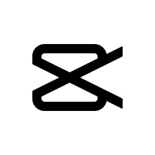
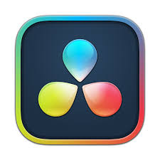

MINHAS ESPECIALIDADES

CapCut
Tenho nível intermediário no CapCut, onde trabalho com cortes precisos, transições suaves, efeitos modernos, legendas automáticas, sincronização com músicas e edições voltadas para vídeos curtos, como reels, TikToks e stories.

DaVinci
No DaVinci Resolve, atuo na edição de vídeos mais complexos. Tenho experiência com montagem de timeline, correção de cor básica, ajustes de áudio, aplicação de LUTs, uso de keyframes e efeitos visuais.